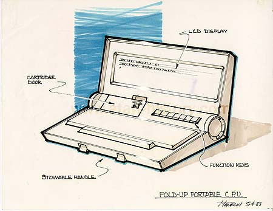

An interesting design, this laptop has a rugged look to it while also incorporating a stowable handle, a compliment of function keys, adjustable fold-up top to adjust angle for better viewing and also the inclusion of a cartridge port for ROM based software applications for quite, easy use.